说明
从网上下载的简谱的调性经常与我们的乐器的调性不同，这时就需要进行转调操作（能直接在脑海中完成转调的大神请忽略）。如半音口琴太多为C调，而从网上下载的简谱大多为非C调，这个时候就需要将简谱改为C调。虽然可根据乐理知识手动推算转换为我们想要的调性，但非常耗时且麻烦。网上搜索简谱转调软件未果，索性就自己编写了一个。
-
暂命名为：“简谱转调工具 Easy-Jianpu Trans”。
-
使用简介：输入简谱图片，选择曲谱原调和希望转出的调，然后导出转调后的结果。（结果为图片，保留了原节奏和歌词等信息）
使用教程
1、双击打开软件
此时工具栏中所有的按钮均为灰色
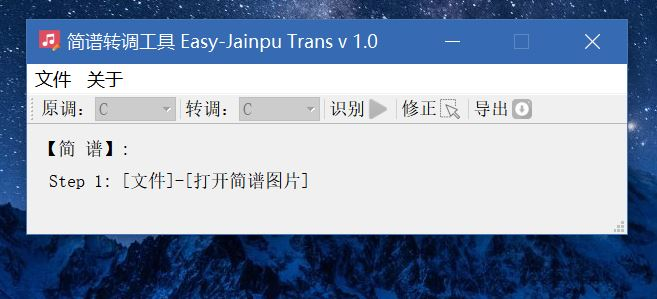2、输入简谱图片
选择 文件--打开简谱图片
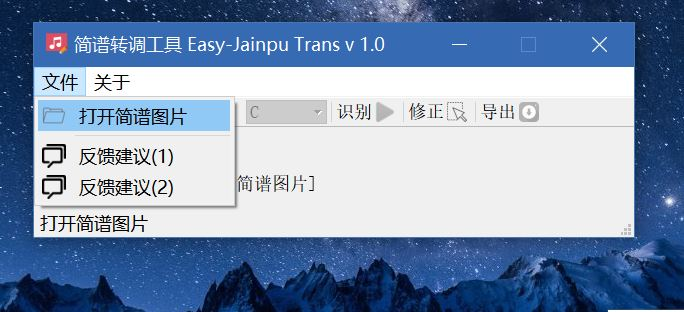这里打开的样例简谱图片为[link]：
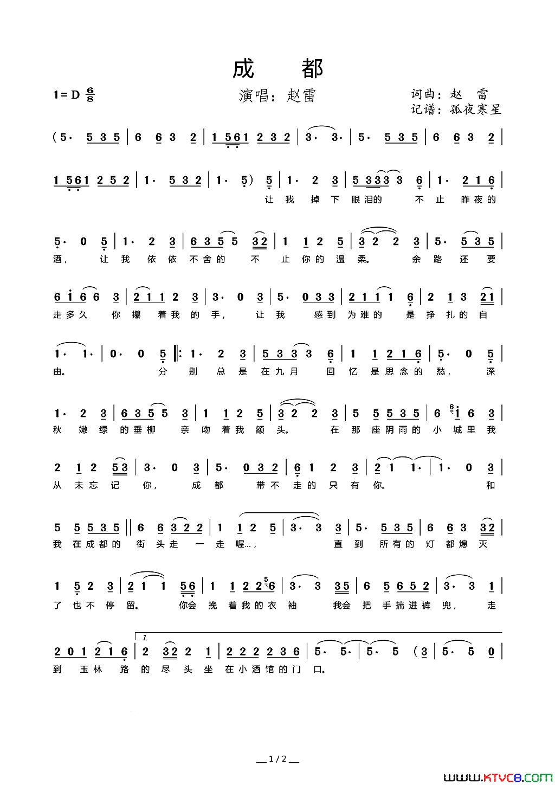3、原调与转出调的设置
导入图片之后，工具栏中部分按钮变为可用状态

“原调”与“转调”设置好后，此时还不能导出转调后的结果 ，需要对原简谱进行识别。
点击绿色的“识别”按钮，对原简谱进行识别。
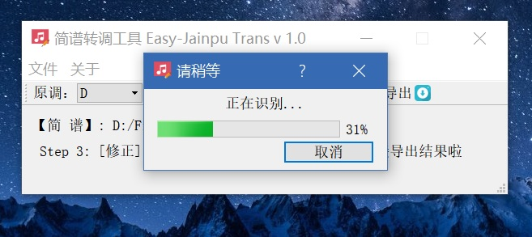4、转调后的简谱的导出
点击工具栏的“导出”按钮，将会弹出保存文件对话框，选择保存路径保存即可！
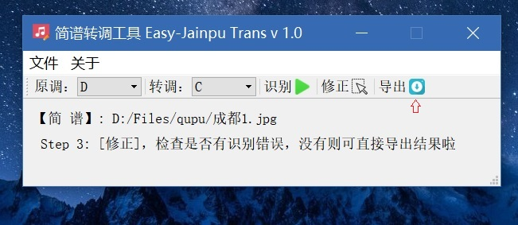下图即为转调后的结果。
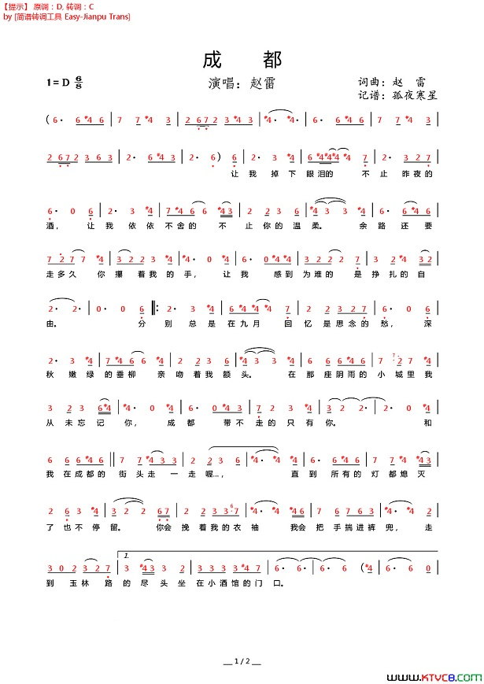5、重要：错误识别的修改
通过前面的步骤，进行转调时，首先要进行图像中音符的识别。
而识别的准确度，直接影响了转调后的简谱的正确性。而目前任意一种图像识别算法都不可能做到 100 % 的准确。（上面的简谱转调的例子的识别结果完全正确， ^_^||| ）
大家注意到在“导出”按钮左侧的“修正”按钮。
另外打开一张简谱，重复以上步骤1-3，然后点击“修正”按钮。
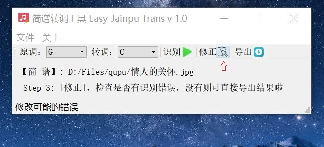这时将会弹出修正简谱界面，如下。每个音符的识别结果，将会在音符的正上方以红色字体显示。
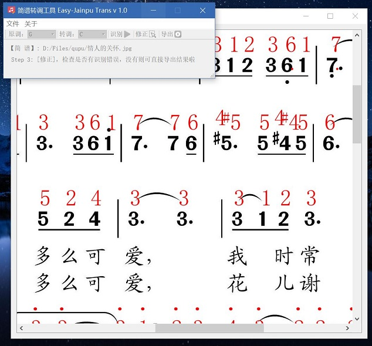注意到第二行的，高音1被错误识别为中音1，需要进行修正。
用鼠标左键点击识别错误的1（选中后，识别的音符将变为蓝色）。此时将弹出修改对话框，如下。
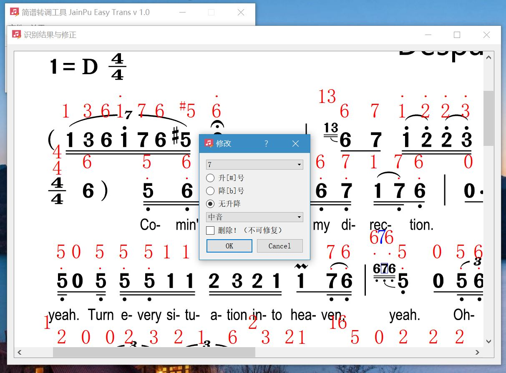在修改对框，在下拉框中将“中音”改为高音。然后点确定。即可修改完成，修改结果如下。
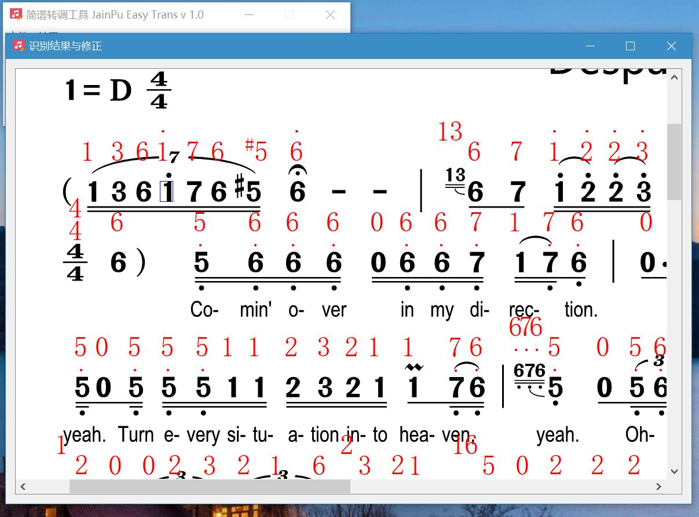另外，注意到第二行的“#5”旁边多出来一个中音“4”，需要将其删除。
鼠标左键选中这个“4”，在弹出的修改对话框中先中“删除”，然后点“确定”按钮。这个多出来的4就被删除了！右边多出来的4也可按照同样方法删除！
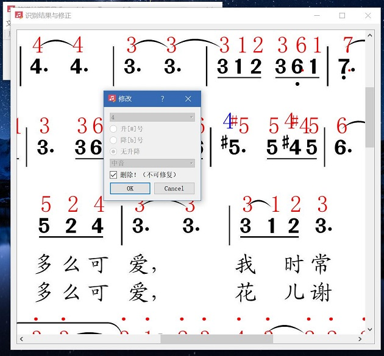删除后,结果如下
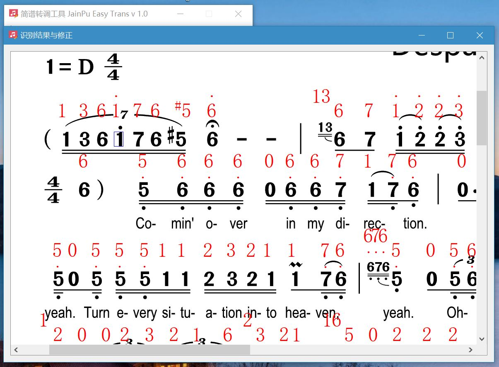这样修改完成，确定没有错误就可以将转调结果导出了（导出见步骤4）
❤ 感谢各位可爱的小伙伴们的慷慨赞赏 ❤
下载地址列表
突然发现一点问题，很快会给出